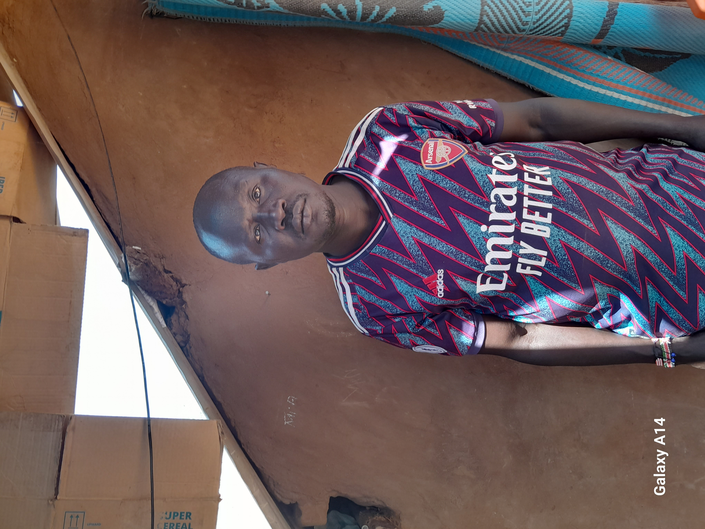

A Story of Survival and Resilience
In the heart of Kakuma Refugee Camp, amidst the dust and uncertainty, lives Dominic Odwa, a man whose story is a testament to the strength of the human spirit. Born in South Sudan, Odwa’s life has been shaped by war, personal tragedy, and an unwavering commitment to education. His journey from the battlefields of his homeland to the classrooms of Kakuma is both heartbreaking and inspiring, reflecting the struggles of thousands of refugees who seek safety and a future beyond war.
Odwa’s journey to Kakuma began under tragic circumstances. Like many others from South Sudan, he was caught in the crossfire of a brutal civil war that had engulfed the country for decades. The war stole from him everything he once knew—his home, his sense of security, and most devastatingly, his family.

In 2011, Odwa’s life took an even darker turn when he was shot on his index finger by a man who had married his brother’s widow. This act of violence was not just an attack on his body but a wound to his very spirit. His brother had already perished in the war, and his sister had been forcibly married to a soldier, a fate all too common for young girls in war-torn regions. With no safe place left for him in South Sudan, he knew his only hope was to flee.
The journey to Kenya was perilous. With little to no resources, Odwa and others fleeing the conflict had to traverse harsh landscapes, evade armed groups, and endure days of hunger and exhaustion. But he was determined—he had to survive. Eventually, he arrived at the Kakuma Refugee Camp in 1998, seeking refuge and a chance to rebuild his shattered life.
"Education is the light that war could not extinguish—I teach so the next generation can build, not destroy."
Building a Life in Kakuma: Education as a Lifeline
When Odwa first arrived at Kakuma, he was lost and broken. The memories of war haunted him, and the uncertainty of life in a refugee camp loomed over him. But within him burned a determination to not let his past define his future. He turned to education as his refuge, his weapon against despair.
Odwa found purpose as a teacher at Mogadishu Primary School, dedicating his life to educating children who, like him, had lost their homes and families. For him, teaching was more than a job—it was a mission. Through education, he believed, he could give these children something that war had tried to take from them: hope.
However, the challenges of teaching in Kakuma were immense. With limited resources, overcrowded classrooms, and students who bore the scars of war, every day was a battle. Yet, Odwa pressed on. He understood that knowledge was the key to breaking the cycle of violence and displacement. He saw education as the only way his five children and the children he taught could dream of a better future.
Supporting 15 family members, including his own children, was no easy task. Life in the camp meant rationed food, unreliable access to clean water, and minimal employment opportunities. But he never gave up. Every morning, he walked into his classroom, looked at the hopeful faces of his students, and knew that his struggles were worth it.
A Call for Change
Odwa’s story is just one among thousands in Kakuma. He represents the unbreakable spirit of refugees who have lost everything yet continue to fight for a better tomorrow. His story highlights the urgent need for improved education systems, employment opportunities, and mental health support in refugee camps.
As the world grapples with the refugee crisis, it is crucial to recognize the voices of individuals like Odwa. His dreams for a better future are not just personal aspirations—they are hopes for a generation that can rebuild nations and foster peace. He reminds us that refugees are not just victims of war; they are survivors, educators, and leaders who, if given the opportunity, can change the world.
For Odwa, for his children, and for every refugee who dreams of a life beyond war and displacement, the fight continues. Their stories deserve to be heard. Their futures deserve to be secured.